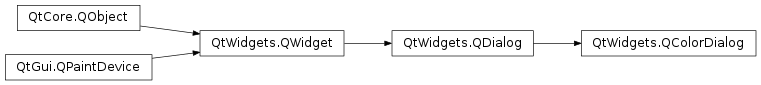
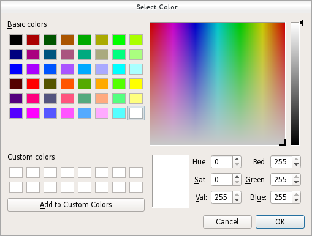

QColorDialog¶
Synopsis¶
Functions¶
- def
currentColor() - def
open(receiver, member) - def
options() - def
selectedColor() - def
setCurrentColor(color) - def
setOption(option[, on=true]) - def
setOptions(options) - def
testOption(option)
Signals¶
- def
colorSelected(color) - def
currentColorChanged(color)
Static functions¶
- def
customColor(index) - def
customCount() - def
getColor([initial=Qt.white[, parent=nullptr[, title=”“[, options=QColorDialog.ColorDialogOptions()]]]]) - def
setCustomColor(index, color) - def
setStandardColor(index, color) - def
standardColor(index)
Detailed Description¶
The
PySide2.QtWidgets.QColorDialogclass provides a dialog widget for specifying colors.The color dialog’s function is to allow users to choose colors. For example, you might use this in a drawing program to allow the user to set the brush color.
The static functions provide modal color dialogs.
The static
PySide2.QtWidgets.QColorDialog.getColor()function shows the dialog, and allows the user to specify a color. This function can also be used to let users choose a color with a level of transparency: pass theShowAlphaChanneloption as an additional argument.The user can store
PySide2.QtWidgets.QColorDialog.customCount()different custom colors. The custom colors are shared by all color dialogs, and remembered during the execution of the program. UsePySide2.QtWidgets.QColorDialog.setCustomColor()to set the custom colors, and usePySide2.QtWidgets.QColorDialog.customColor()to get them.When pressing the “Pick Screen Color” button, the cursor changes to a haircross and the colors on the screen are scanned. The user can pick up one by clicking the mouse or the Enter button. Pressing Escape restores the last color selected before entering this mode.
The Standard Dialogs example shows how to use
PySide2.QtWidgets.QColorDialogas well as other built-in Qt dialogs.See also
PySide2.QtGui.QColorPySide2.QtWidgets.QFileDialogPySide2.QtWidgets.QFontDialogStandard Dialogs Example
-
class
PySide2.QtWidgets.QColorDialog([parent=nullptr])¶ -
class
PySide2.QtWidgets.QColorDialog(initial[, parent=nullptr]) Parameters: - initial –
PySide2.QtGui.QColor - parent –
PySide2.QtWidgets.QWidget
Constructs a color dialog with the given
parent.Constructs a color dialog with the given
parentand specifiedinitialcolor.- initial –
-
PySide2.QtWidgets.QColorDialog.ColorDialogOption¶ This enum specifies various options that affect the look and feel of a color dialog.
Constant Description QColorDialog.ShowAlphaChannel Allow the user to select the alpha component of a color. QColorDialog.NoButtons Don’t display OK and Cancel buttons. (Useful for “live dialogs”.) QColorDialog.DontUseNativeDialog Use Qt’s standard color dialog instead of the operating system native color dialog.
-
PySide2.QtWidgets.QColorDialog.colorSelected(color)¶ Parameters: color – PySide2.QtGui.QColor
-
PySide2.QtWidgets.QColorDialog.currentColor()¶ Return type: PySide2.QtGui.QColor
-
PySide2.QtWidgets.QColorDialog.currentColorChanged(color)¶ Parameters: color – PySide2.QtGui.QColor
-
static
PySide2.QtWidgets.QColorDialog.customColor(index)¶ Parameters: index – PySide2.QtCore.intReturn type: PySide2.QtGui.QColorReturns the custom color at the given
indexas aPySide2.QtGui.QColorvalue.
-
static
PySide2.QtWidgets.QColorDialog.customCount()¶ Return type: PySide2.QtCore.intReturns the number of custom colors supported by
PySide2.QtWidgets.QColorDialog. All color dialogs share the same custom colors.
-
static
PySide2.QtWidgets.QColorDialog.getColor([initial=Qt.white[, parent=nullptr[, title=""[, options=QColorDialog.ColorDialogOptions()]]]])¶ Parameters: - initial –
PySide2.QtGui.QColor - parent –
PySide2.QtWidgets.QWidget - title – unicode
- options –
PySide2.QtWidgets.QColorDialog.ColorDialogOptions
Return type: Pops up a modal color dialog with the given window
title(or “Select Color” if none is specified), lets the user choose a color, and returns that color. The color is initially set toinitial. The dialog is a child ofparent. It returns an invalid (seeQColor.isValid()) color if the user cancels the dialog.The
optionsargument allows you to customize the dialog.- initial –
-
PySide2.QtWidgets.QColorDialog.open(receiver, member)¶ Parameters: - receiver –
PySide2.QtCore.QObject - member – str
This is an overloaded function.
Opens the dialog and connects its
PySide2.QtWidgets.QColorDialog.colorSelected()signal to the slot specified byreceiverandmember.The signal will be disconnected from the slot when the dialog is closed.
- receiver –
-
PySide2.QtWidgets.QColorDialog.options()¶ Return type: PySide2.QtWidgets.QColorDialog.ColorDialogOptions
-
PySide2.QtWidgets.QColorDialog.selectedColor()¶ Return type: PySide2.QtGui.QColorReturns the color that the user selected by clicking the OK or equivalent button.
Note
This color is not always the same as the color held by the
PySide2.QtWidgets.QColorDialog.currentColor()property since the user can choose different colors before finally selecting the one to use.
-
PySide2.QtWidgets.QColorDialog.setCurrentColor(color)¶ Parameters: color – PySide2.QtGui.QColor
-
static
PySide2.QtWidgets.QColorDialog.setCustomColor(index, color)¶ Parameters: - index –
PySide2.QtCore.int - color –
PySide2.QtGui.QColor
Sets the custom color at
indexto thePySide2.QtGui.QColorcolorvalue.Note
This function does not apply to the Native Color Dialog on the macOS platform. If you still require this function, use the
QColorDialog.DontUseNativeDialogoption.- index –
-
PySide2.QtWidgets.QColorDialog.setOption(option[, on=true])¶ Parameters: - option –
PySide2.QtWidgets.QColorDialog.ColorDialogOption - on –
PySide2.QtCore.bool
Sets the given
optionto be enabled ifonis true; otherwise, clears the givenoption.- option –
-
PySide2.QtWidgets.QColorDialog.setOptions(options)¶ Parameters: options – PySide2.QtWidgets.QColorDialog.ColorDialogOptions
-
static
PySide2.QtWidgets.QColorDialog.setStandardColor(index, color)¶ Parameters: - index –
PySide2.QtCore.int - color –
PySide2.QtGui.QColor
Sets the standard color at
indexto thePySide2.QtGui.QColorcolorvalue.Note
This function does not apply to the Native Color Dialog on the macOS platform. If you still require this function, use the
QColorDialog.DontUseNativeDialogoption.- index –
-
static
PySide2.QtWidgets.QColorDialog.standardColor(index)¶ Parameters: index – PySide2.QtCore.intReturn type: PySide2.QtGui.QColorReturns the standard color at the given
indexas aPySide2.QtGui.QColorvalue.
-
PySide2.QtWidgets.QColorDialog.testOption(option)¶ Parameters: option – PySide2.QtWidgets.QColorDialog.ColorDialogOptionReturn type: PySide2.QtCore.boolReturns
trueif the givenoptionis enabled; otherwise, returns false.
© 2018 The Qt Company Ltd. Documentation contributions included herein are the copyrights of their respective owners. The documentation provided herein is licensed under the terms of the GNU Free Documentation License version 1.3 as published by the Free Software Foundation. Qt and respective logos are trademarks of The Qt Company Ltd. in Finland and/or other countries worldwide. All other trademarks are property of their respective owners.